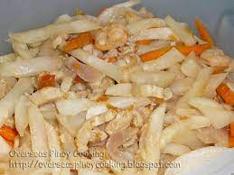

<!DOCTYPE html PUBLIC "-//W3C//DTD XHTML 1.0 Transitional//EN" "http://www.w3.org/TR/xhtml1/DTD/xhtml1-transitional.dtd">
<html xmlns="http://www.w3.org/1999/xhtml">
<head>
<link href="res.css" rel="stylesheet" type="text/css" />
<meta http-equiv="Content-Type" content="text/html; charset=utf-8" />
<title>Ginisang Labanos/title>
</head>

<body>
<div id="boxes">
	
			<dt><h1 id = "Ginisang Labanos">Ginisang Labanos</h1></dt>
			<center>
				
				
			</center>
			<dd>Sauteed daikon with carrots and pork.</dd>	
			<ul>Ingredients
				<li>1 lb. daikon white radish, sliced into thick strips</li>
				<li>1 piece carrot sliced into thick strips</li>
				<li>1 piece tomato cubed</li>
				<li>3/4 cup pork thinly sliced</li>
				<li>3/4 cup dried shrimp small</li>
				<li>1 piece onion sliced</li>
				<li>3 cloves garlic crushed</li>
				<li>2 teaspoons fish sauce</li>
				<li>1/2 cup water</li>
				<li>1/2 teaspoon ground black pepper</li>
				<li>2 tablespoons cooking oil</li>
				</ul>
				<ol>Procedure
					<li>Heat oil in a pan</li>
					<li>Sauté garlic and onion</li>
					<li>Once the onion becomes soft, put-in the tomato. Cook for 3 minutes.</li>
					<li>Add the pork. Cook for 5 minutes.</li>
					<li>Pour-in water and let boil. Cover and simmer for 10 minutes.</li>
					<li>Add-in the daikon and carrot. Stir. Cover and cook for 5 minutes.</li>
					<li>Put-in the shrimp, fish sauce, and ground black pepper. Stir and cook for 10 minutes more.</li>
					<li>Transfer to a serving plate.</li>
					</ol>
                </div>
<h1> <li><a href="../Local.html">Click To Return</a></li></h1>
</body>
</html>
